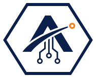
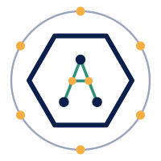

ADMMIS.TECH logo: FINAL (T-601, 2026-11-07)
Vector redraw of Roshan's own logo (design/inputs/admmis.tech logo.png): hexagon, "A" with swoosh and orange node, circuit lines, ADMMIS / TECH wordmark, outer ring with 6 orange nodes and ring text. No fonts or rasters inside the SVGs (text is converted to paths). It is a redraw, not an original vector; ask Roshan if one exists. Earlier "AT" concepts are kept below for reference only.
Final files


Rules. Clear space around the lockup = the width of one hexagon stroke times 4 (about the height of the "A" counter). Minimum lockup height 32 px; below that use the favicon. The badge needs at least 200 px: its ring text is unreadable below that. Colours: navy #0A1F4A (logo as supplied is about #072051, matched to the site navy), orange #F48221 on nodes only, ring #9AA5BD on light and #445372 on navy. On navy, hexagon, A, circuits and text turn white; the orange node stays orange. Favicon omits the circuit lines (illegible at 32 px).
Signboard-emblem redraw (reference only)

Earlier "AT" concepts (superseded, kept for reference)
ADMMIS.TECH "AT" logo: 3 concepts (T-601, earlier round)
ADR-020: ADMMIS family, own AT monogram / combination mark. Each concept is a clean SVG on a 64 x 64 grid. Files: concept-N-name-{mark,mark-dark,lockup,lockup-dark}.svg, PNG previews in png/.
Concept 1: Peak
Idea. An "A" drawn as a Himalayan peak. The T is not placed beside it: its bar is the A's crossbar, stretched past both legs, and its stem drops from the centre. One shape, two letters. The vermilion dot above the summit is a sindoor / sun mark and can be animated as a loading state.
Assessment. Strongest idea and most ownable. Thin strokes: at 16 px the T bar blurs and it reads as a plain A, so use it from 24 px up and give it a heavier favicon cut if chosen. Works with any ADMMIS style as it uses no container.
Concept 2: Tile
Idea. AT set side by side in a rounded tile. The tile is the family device: when the real ADMMIS logo arrives, the tile shape, radius and colour can be matched exactly, so ADMMIS.TECH looks like a sibling at once. Accent dot = bindi.
Assessment. Safest and best for app-icon, avatar and favicon use. Least distinctive alone. Tile colour is the first thing to align with ADMMIS.
Concept 3: Knockout
Idea. A solid triangle (peak / roof / arrow up = growth) with a T cut out of it in negative space. The T takes the colour of whatever background is behind it, so it works on photos and any brand colour.
Assessment. Boldest at 16-32 px: the best favicon of the three. The T is read second, so the mark leads with "A" and a clear shape. Good for rental clients too: only one fill colour to re-skin.